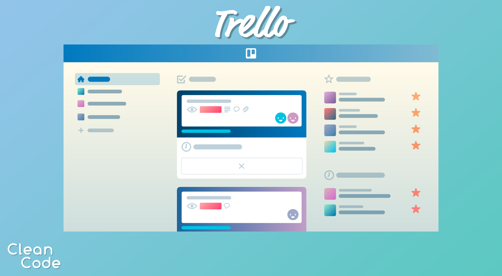

What is Kanban?
by Mykola Nazimkov
Kanban- is a lean method to manage and improve work across human systems.
In software development, the aim is to provide a visual process management system which aids decision-making about what, when, and how much to produce.
Three general practices of Kanban:
- It visualizes the work of the development team (the features and user stories).
- It captures WIP limits for development steps: the circled values below the column headings that limit the number of work items under that step
- It documents policies, also known as done rules, inside blue rectangles under some of the development steps.
Visualization of work on Kanban board

Managing workflow
Kanban manages workflow directly on the Kanban board. The WIP limits for development steps provide development teams immediate feedback on common workflow issues.Problems are visual and evident immediately, and re-planning can be done continuously. The work management is made possible by limiting work in progress in a way team members can see and track at all times.
Kanban metrics
- Team velocity
- Lead and Cycle time
- Actionable Agile metrics
Examples of kanban services:
- Trello
- Kanbanchi
- MeisterTask
- Microsoft Planner
Trello
Kanbanchi
MeisterTask